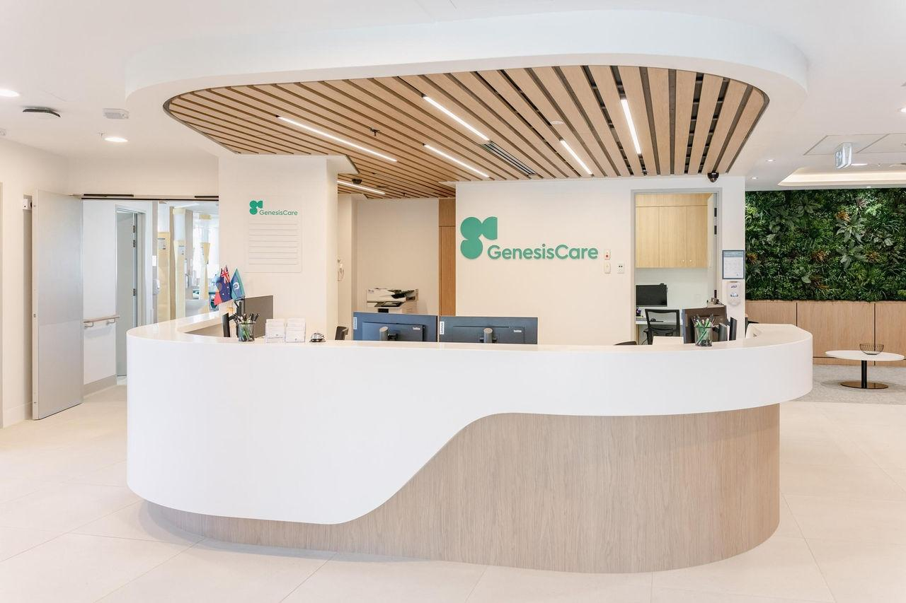
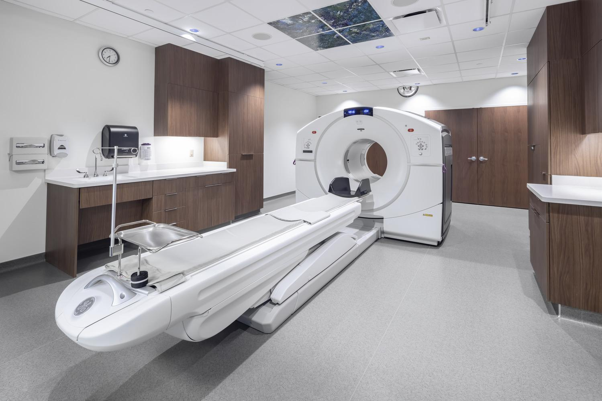
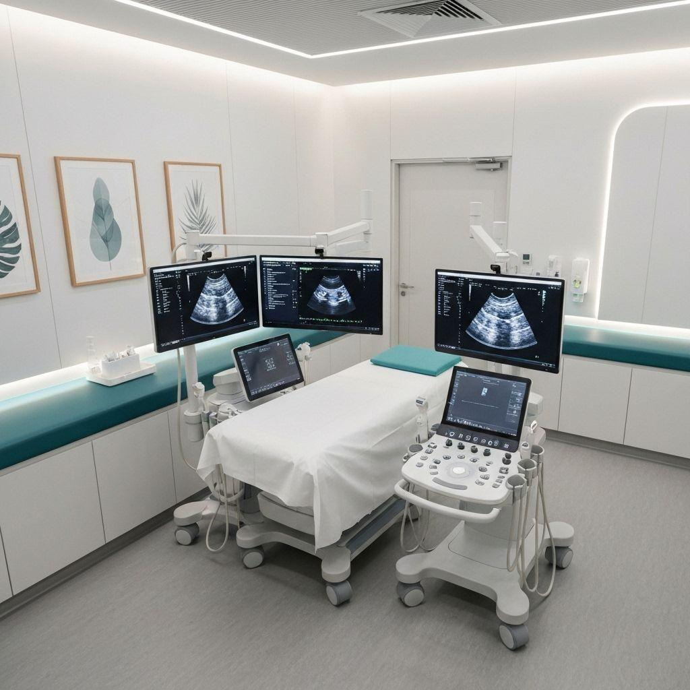

About Our Diagnostic Center
Dedicated to diagnostic precision, low-dose imaging protocols, and a calm, patient-friendly clinical experience supported by certified radiologists and advanced diagnostic systems.
Built on Diagnostic Accuracy and Compassion
Founded with the objective of eliminating diagnostic uncertainty, our center bridges the gap between sophisticated radiology engineering and warm, respectful patient care.
Every investigation at our facility is handled by qualified radiographers and scrutinized by certified diagnostic radiologists. We believe an accurate scan and a prompt, clearly explained report are the vital cornerstones of every patient’s treatment plan.
100% Digital Workflow
Filmless, instant PACS network connecting examination suites to reporting workstations.
Safety Protocols (ALARA)
Strict As Low As Reasonably Achievable radiation dosage protocols for patient safety.

Committed to Quality and Care
Our mission and vision guide every interaction, clinical protocol, and investment in modern imaging technology.
Our Mission
To deliver uncompromising diagnostic imaging precision, reduce patient anxiety through respectful communication, and provide treating physicians with actionable, rapid diagnostic insights that enable timely, life-saving clinical care.
Our Vision
To set the benchmark for modern diagnostic centers by standardizing low-dose digital radiography, high-resolution sonography, transparent pricing, and digital patient access in an immaculate, stress-free clinical environment.
Our Diagnostic Expertise
Our facility is designed around 4 dedicated diagnostic imaging divisions.

Values That Define Our Care
Every clinical decision, report, and patient interaction is grounded in these four values.


Clinical Integrity
Every radiograph and sonogram is interpreted objectively with zero shortcuts or automated guesswork.
Patient Dignity
We treat every visitor with empathy, providing private changing rooms, gentle positioning, and warm guidance.
Transparent Ethics
Standardized, published pricing schedules with no hidden fees, duplicate charges, or forced testing.
Radiation Safety
We strictly enforce ALARA dosage principles, utilizing modern lead aprons, thyroid collars, and collimated beams.
Inside Our Advanced Facilities
A glimpse into our clinical examination rooms, advanced scanning suites, and film reading stations.




Accreditations & Quality Certifications
Our facility operates in full accordance with national radiological safeguards and international diagnostic quality management frameworks.
AERB Compliant
Certified by the Atomic Energy Regulatory Board for structural lead shielding and radiation emission safety.
ISO 9001:2015
Standardized administrative, patient care, reporting verification, and equipment calibration protocols.
NABH Aligned
Clinical workflow alignment with National Accreditation Board for Hospitals & Healthcare Providers standards.
DICOM 3.0 Standard
Interoperable image transmission compatible with worldwide hospital PACS systems and specialist diagnostic software.
Milestones of Clinical Growth
A decade-long commitment to pioneering modern diagnostic medical imaging and expanding accessible healthcare.
Center Foundation
Established as an independent diagnostic imaging hub equipped with state-of-the-art high-frequency radiography and ultrasound suites.
Direct Digital (DR) Upgrade
Phased out all chemical film processing in favor of cesium iodide direct flat-panel detectors, reducing radiation exposure by up to 70%.
Cardiac Telemetry Network
Integrated 12-channel digital electrocardiographs with cloud tele-cardiology reporting for immediate same-hour cardiac clearance.
Enterprise Cloud PACS
Launched universal QR-code DICOM access, allowing referring clinicians worldwide instant browser-based 3D scan examination.